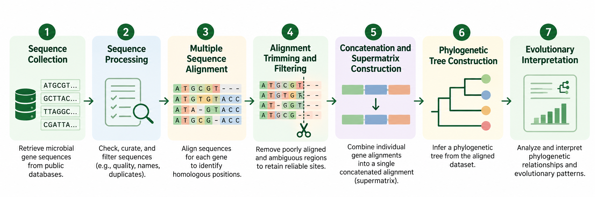

Current research
Investigating microbial evolutionary relationships
My current research examines microbial evolution through molecular sequence data and phylogenetic approaches under the supervision of Professor Haitao Shang. I work with computational methods to organize and compare biological sequences, reconstruct phylogenetic trees, and explore evolutionary patterns across microorganisms.
A central part of this work involves gene trees and species trees, which provide complementary perspectives on evolutionary history. I am also interested in how these relationships connect to microbial diversity and the roles of microorganisms in environmental and biogeochemical processes.
